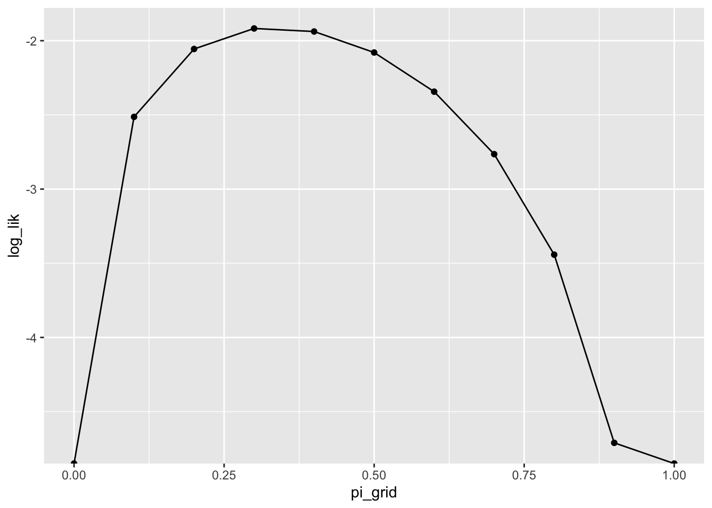

set.seed(42)
y <- rbinom(2000, 1, 0.5)
prod(dbinom(y, 1, 0.5)) # the likelihood, computed directly
sum(dbinom(y, 1, 0.5, log = TRUE)) # the log-likelihoodWeek 2 Exercises
Instructor and TA copy: complete solutions, always open
Complete solutions are available. Work each exercise before you open one.
Do all the exercises below. The Extra Practice problems at the end are optional.
Maximum Likelihood
Exercise 1 A Function of What?
For the Bernoulli model, we wrote the likelihood as \(L(\pi) = \pi^{k}(1 - \pi)^{(N - k)}\), where \(k\) is the number of successes in \(N\) trials. In this expression, which symbol is the variable, and which symbols are fixed? In one sentence describe the question that \(L(\pi)\) answers.
Hint 1
In the pmf \(f(x; \pi)\), we treat \(\pi\) as fixed and \(x\) as the variable. What changed when we relabeled \(f(x; \pi)\) as \(L(\pi)\)?
Hint 2
Before the notes ever write \(L(\pi)\), the Bernoulli section evaluates the same fixed toothpaste-cap data at several candidate values of \(\pi\) (0.1, 0.45, 0.55, and 0.9), one at a time. Reread that paragraph.
Complete solution
The likelihood flips the usual roles compared to \(f(x; \pi)\). For the likelihood, the data are fixed (we observed them!), and the parameter varies. In \(L(\pi)\), the variable is \(\pi\). The data (or summaries \(k\) and \(N\), in this case) are fixed numbers. \(L(\pi)\) answers the question: if the parameter were \(\pi\), how likely would these data be? ML then picks the \(\pi\) that makes the observed data most likely.
Something that’s wrong: the likelihood is not a probability distribution over \(\pi\). It doesn’t integrate to one. It does not allow a probability claim about the parameter.
Exercise 2 Why the Log? Predict, Then Check
Suppose you observe 2,000 Bernoulli trials with \(\pi = 0.5\), so each observation has probability exactly 0.5. The likelihood is the product of these 2,000 probabilities.
Predict what the first line below returns before you run it, and write down your reasoning.
Now run both lines. Explain what happened, why it’s expected, and why it matters for ML. The log fixes this computational problem, but it also helps with the calculus. How?
Hint 1
Each of the 2,000 factors equals 0.5, so the product is \(0.5^{2000}\). Figure out roughly how big that is as a power of ten. Compare that to the smallest positive number R can store (i.e., run .Machine$double.xmin).
A rule of thumb: \(2^{10} = 1024 \approx 10^3\). Thus, ten halvings cost about three orders of magnitude.
Hint 2
The notes give two separate reasons for taking the log (i.e., where they define \(L(\pi)\) in the Bernoulli example). One reason is what you just watched happen in R. The other reason is about calculus.
Complete solution
Start with the prediction. Each factor is 0.5, so the product is \(0.5^{2000} \approx 10^{-600}\). Computers can’t track numbers that small (the smallest positive number R can store is about \(10^{-308}\); run .Machine$double.xmin), so prod() returns exactly 0.
set.seed(42)
y <- rbinom(2000, 1, 0.5)
prod(dbinom(y, 1, 0.5)) # the likelihood, computed directly[1] 0sum(dbinom(y, 1, 0.5, log = TRUE)) # the log-likelihood[1] -1386.294The log-likelihood works just fine, though. It’s \(2000 \log(0.5) \approx -1386.29\). This is a very ordinary number that computers can handle.
(Importantly, a hill-climbing algorithm can’t climb a function that returns 0 everywhere!)
And this matters for the calculus, too. The log turns the product into a sum. Derivatives are much easier with sums.
Exercise 3 What a Grid Can Miss
Suppose a colleague estimates a Bernoulli \(\pi\) by computing the log-likelihood at the eleven values \(0, 0.1, 0.2, \ldots, 1\) and reporting the best of the eleven as “the ML estimate.” In one or two sentences, in what sense is that answer wrong, and how would you tighten it? (If you’d like to actually run a grid search, that’s Extra Practice 1.)
Complete solution
A grid can bracket the maximum, but it almost never contains it. The true ML estimate is \(k/N\). Unless we’re lucky, this will not be a multiple of 0.1. To tighten the answer, we could make the grid finer near the peak (or just use calculus or optim()).
Exercise 4 From Derivative to Estimator
Last week, you found \(\frac{d\ell}{d\pi}\) for \(\ell(\pi) = S \log(\pi) + (N - S)\log(1 - \pi)\). Set the derivative equal to zero and solve for \(\hat{\pi}\).
Complete solution
We have \(\frac{d\ell}{d\pi} = \frac{S}{\pi} - \frac{N - S}{1 - \pi}\). Setting it to zero at \(\pi = \hat{\pi}\) and clearing the fractions, we obtain
\[ \begin{aligned} \frac{S}{\hat{\pi}} &= \frac{N - S}{1 - \hat{\pi}} \\ S(1 - \hat{\pi}) &= (N - S)\hat{\pi} \\ S - S\hat{\pi} &= N\hat{\pi} - S\hat{\pi} \\ S &= N\hat{\pi} \\ \hat{\pi} &= \frac{S}{N}. \end{aligned} \]
The ML estimate is the fraction of successes (the sample average of the 0s and 1s).
Exercise 5 Reading a Contour Plot
The plot below shows the log-likelihood for the notes’ beta-distribution example. We have 100 observations (simulated from a beta distribution). I computed the log-likelihood \(\log L(\alpha, \beta)\) over a grid of parameter pairs.

- Roughly where is the ML estimate?
- What does a single labeled curve on this plot mean?
- For the Bernoulli model, we found \(\hat{\pi}\) with pencil and paper. Why can’t we do that here?
For part (a)
Each labeled curve gives the log-likelihood value along it; higher numbers sit closer to the peak. Find the region where the labeled values are highest and read off its \((\alpha, \beta)\) coordinates.
For part (b)
The plot shows the height of \(\log L(\alpha, \beta)\). Along one curve, what is constant?
For part (c)
Look back at what stopped us in the notes’ beta example.
Complete solution
Part (a) At the center of the innermost region, around \(\alpha = 12\), \(\beta = 12\). (The notes’ optim() run puts it at \(\hat{\alpha} \approx 12.0\) and \(\hat{\beta} \approx 11.9\).)
Part (b) A curve is a level set, such that every pair \((\alpha, \beta)\) on that curve produces the same value of the log-likelihood.
Part (c) The beta log-likelihood contains \(\log B(\alpha, \beta)\). We can evaluate that term for any \(\alpha\) and \(\beta\) we like (R’s lbeta() does it instantly), but differentiating it and setting the two derivatives to zero leaves a pair of equations we can’t solve for \(\alpha\) and \(\beta\) on paper. An intractable likelihood means we have no closed-form maximizer. (This is the usual situation; our first few tractable models are the exceptions.)
Exercise 6 Diagnose the Error
A classmate wants the ML estimate of a Poisson rate \(\lambda\) for the data below, and their code runs without an error or a warning:
y <- c(12, 7, 9, 12, 10)
ll_pois <- function(par, y) {
sum(dpois(y, lambda = par, log = TRUE))
}
est <- optim(par = 1,
fn = ll_pois,
y = y,
method = "Brent",
lower = 0.001, upper = 100)
est$par[1] 100But the estimate is absurd. The average of y is 10, but \(\hat{\lambda}\) comes back as 100. What went wrong? What’s the fix? What is the category of the mistake: a typo, an algebra slip, or something else?
Hint
When you hand optim() a function what does it do by default: maximize or minimize? See the Details section of ?optim.
Complete solution
optim() is a minimizer by default. By default it looks for the “minimum likelihood.” But the Poisson log-likelihood always gets smaller as \(\lambda\) moves away from the average of y. The search “climbed” to the edge of the parameter space (i.e., [0.001 to 100]) and stopped.
Don’t read too much into which bound optim() found. method = "Brent" assumes the function has a single interior minimum. In this case, the log-likelihood at lower = 0.001 is even smaller than at upper = 100, so optim() didn’t even land on the smaller of the two endpoints. It just climbed downhill (in the wrong direction!) until it ran out of space.
The fix is control = list(fnscale = -1). This flips the function over, which turns a minimizer into a maximizer.
est <- optim(par = 1,
fn = ll_pois,
y = y,
control = list(fnscale = -1),
method = "Brent",
lower = 0.001, upper = 100)
est$par[1] 10Now \(\hat{\lambda} = 10\), which matches the closed form.
It’s not a typo and it’s not algebra. The code computed exactly what it was told to compute. It is a misuse of the tool (or a misunderstanding of how the tool works). This is a dangerous category of error. No error or warning appeared.
Exercise 7 Trust It or Not?
Your optim() call returns $convergence = 1, and $par equals the upper bound you supplied. Do you trust the estimate? What do you check or change next?
Hint
?optim’s Value section documents every code $convergence can return, not only 0. Look up what 1 means there before you decide anything else.
Complete solution
No. $convergence = 1 means the algorithm hit its iteration limit without converging (see ?optim). A parameter estimate sitting exactly on a boundary is a red flag.
Exercise 8 An Unfamiliar Density
Suppose a random variable has pdf \(f(x; \theta) = \theta x^{\theta - 1}\) for \(0 < x < 1\) and \(\theta > 0\), and suppose we collect \(N\) iid observations \(x = \{x_1, x_2, \ldots, x_N\}\).1 Find the ML estimator of \(\theta\).
Hint 1
What steps did we follow for the Bernoulli and the Poisson? Start the same way here by writing \(L(\theta)\) as a product over the observations.
Hint 2
Take the log and bring the exponent down. You should end up with two terms: one involving \(\log \theta\) and one involving \(\sum \log x_i\).
Self-check
Your formula and optim() must agree. For x <- c(0.2, 0.5, 0.9), evaluate your \(\hat{\theta}\) formula, then run the code below and compare.
x <- c(0.2, 0.5, 0.9)
ll_fn <- function(theta, x) {
sum(log(theta) + (theta - 1)*log(x))
}
est <- optim(par = 1,
fn = ll_fn,
x = x,
control = list(fnscale = -1),
method = "Brent",
lower = 0, upper = 100)
est$parComplete solution
The recipe carries over unchanged. The only new bit is keeping track of \(\sum \log x_i\).
First, write down the likelihood and simplify the product:
\[ L(\theta) = \prod_{i = 1}^N \theta x_i^{\theta - 1} = \theta^N \prod_{i = 1}^N x_i^{\theta - 1}. \]
Second, take the log. The product becomes a sum, and \(\log(a^b) = b \log(a)\) brings the exponent down:
\[ \log L(\theta) = N \log \theta + (\theta - 1) \sum_{i = 1}^N \log x_i. \]
Third, differentiate with respect to \(\theta\):
\[ \frac{d \log L}{d\theta} = \frac{N}{\theta} + \sum_{i = 1}^N \log x_i. \]
Fourth, set the derivative to zero at \(\theta = \hat{\theta}\) and solve:
\[ \hat{\theta} = \frac{N}{-\sum_{i = 1}^N \log x_i}. \]
For the check data, \(\hat{\theta} = 3 / [-(\log 0.2 + \log 0.5 + \log 0.9)] \approx 1.246\), and optim() returns the same 1.246.
The Invariance Property
Exercise 9 One Line of Invariance
Let \(\hat{\theta}\) be the ML estimate of \(\theta\). Suppose we are interested in \(\psi = \theta^2\). What is the ML estimate of \(\psi\)?
Hint
This week’s notes has a chapter built entirely turning an ML estimate of one quantity into an ML estimate of a function of it, without writing down a new likelihood.
Complete solution
By the invariance property, the ML estimate of a function of a parameter is the function of the ML estimate:
\[ \hat{\psi} = \hat{\theta}^2. \]
That’s the whole answer. The brevity is the point. We don’t need to derive a new likelihood for \(\psi\).
Exercise 10 The Exponential Model
The exponential distribution has pdf \(f(t; \lambda) = \lambda e^{-\lambda t}\) for \(t \geq 0\) and \(\lambda > 0\). We might use the exponential distribution to model durations. A duration is the time until an event, such as the end of a coalition government.
- Suppose we collect \(N\) iid durations \(t = \{t_1, t_2, \ldots, t_N\}\). Find the ML estimator of \(\lambda\).
- The parameter \(\lambda\) is called the rate. The mean of the exponential distribution is \(\frac{1}{\lambda}\).2 Give the ML estimator of the mean.
For part (a)
This is very similar to the derivation of the ML estimate of \(\lambda\) for the Poisson distribution, with one important difference. Be careful with your algebra!
Self-check
# simulate durations from a known rate and see whether your formulas
# recover it
set.seed(1)
lambda_true <- 2
t <- rexp(500, rate = lambda_true)
# fill in your part (a) estimator, as a function of t
lambda_hat <- NA
# a numerical check: maximize the exponential log-likelihood directly
ll_fn <- function(lambda, t) sum(dexp(t, rate = lambda, log = TRUE))
lambda_hat_numeric <- optim(par = 1, fn = ll_fn, t = t,
method = "Brent", lower = 1e-6, upper = 20,
control = list(fnscale = -1))$par
# these two should agree closely
lambda_hat
lambda_hat_numeric
# fill in your part (b) estimator, as a function of lambda_hat
mean_hat <- NA
# an independent numerical check: reparameterize the same likelihood in
# terms of the mean and maximize over that instead
ll_fn_mean <- function(mu, t) sum(dexp(t, rate = 1 / mu, log = TRUE))
mean_hat_numeric <- optim(par = 1, fn = ll_fn_mean, t = t,
method = "Brent", lower = 1e-6, upper = 20,
control = list(fnscale = -1))$par
# these two should agree closely
mean_hat
mean_hat_numericComplete solution
Part (a) The key move is that the product of exponentials collects into a single exponential of a sum.
First, write down the likelihood and simplify:
\[ L(\lambda) = \prod_{i = 1}^N \lambda e^{-\lambda t_i} = \lambda^N e^{-\lambda \sum_{i = 1}^N t_i}. \]
Second, take the log. The product becomes a sum, and \(\log e^u = u\):
\[ \log L(\lambda) = N \log \lambda - \lambda \sum_{i = 1}^N t_i. \]
Third, differentiate:
\[ \frac{d \log L}{d\lambda} = \frac{N}{\lambda} - \sum_{i = 1}^N t_i. \]
Fourth, set the derivative to zero at \(\lambda = \hat{\lambda}\) and solve:
\[ \hat{\lambda} = \frac{N}{\sum_{i = 1}^N t_i} = \frac{1}{\text{avg}(t)}. \]
Thus, the ML estimator of the rate is the reciprocal of the average duration.
Part (b) By the invariance property, the ML estimator of the mean \(\frac{1}{\lambda}\) is
\[ \widehat{\text{mean}} = \frac{1}{\hat{\lambda}} = \text{avg}(t). \]
The ML estimate of the mean duration is the average duration, which seems sensible.
Exercise 11 Four Models, One Number
Suppose you observe the binary outcome y <- c(0, 1, 0, 1, 1, 1, 0) and you want to estimate the mean of the distribution that generated it. Naturally, you’d model these data as Bernoulli and estimate \(\pi\). But suppose that instead you model these 0s and 1s with a normal distribution. What is your ML estimate of the mean? What if you use the Poisson? The exponential?
Complete the table below: for each model, the ML estimates of the parameters, then the estimate of the mean via the invariance property. What do you notice? Explain why it happens.
| Distribution | Parameter(s) | ML estimates | Estimate of the mean |
|---|---|---|---|
| Bernoulli | \(\pi\) | ?? | ?? |
| Normal | \(\mu\), \(\sigma^2\) | ?? | ?? |
| Poisson | \(\lambda\) | ?? | ?? |
| Exponential | \(\lambda\) | ?? | ?? |
Hint 1
For each model, what is \(E(Y)\) in terms of that model’s parameter? (Three of the four means are the parameter. The fourth is a transformation of the parameter.)
Hint 2
Estimate each model’s parameters by ML (all four estimators appear in the notes or in Exercise 10). If needed, transform the estimates with the invariance property.
Complete solution
Here’s the completed table, for y with \(\text{avg}(y) = \frac{4}{7} \approx 0.571\).
| Distribution | Parameter(s) | ML estimates | Estimate of the mean |
|---|---|---|---|
| Bernoulli | \(\pi\) | \(\hat{\pi} = \text{avg}(y) \approx 0.571\) | \(\hat{\pi} \approx 0.571\) (no transformation needed: \(E(Y) = \pi\)) |
| Normal | \(\mu\), \(\sigma^2\) | \(\hat{\mu} = \text{avg}(y) \approx 0.571\) and \(\hat{\sigma}^2 = \frac{\sum (y_i - \bar{y})^2}{N} \approx 0.245\) | \(\hat{\mu} \approx 0.571\) |
| Poisson | \(\lambda\) | \(\hat{\lambda} = \text{avg}(y) \approx 0.571\) | \(\hat{\lambda} \approx 0.571\) (\(E(Y) = \lambda\)) |
| Exponential | \(\lambda\) | \(\hat{\lambda} = \frac{1}{\text{avg}(y)} = 1.75\) | \(\frac{1}{\hat{\lambda}} = \text{avg}(y) \approx 0.571\) |
No matter which distribution we use, we obtain the identical estimate of the mean. Not the same in expectation. Not the same asymptotically. It’s the exact same number, every time. The reason: in each of these four models, setting the derivative to zero forces the model’s own mean to match the sample mean. The four likelihoods use different distributions and different parameters, but every one of them lands on \(\text{avg}(y)\).
And importantly, whatever properties one of these estimators has, the others share. If one is consistent, all are consistent. If one is unbiased, all are unbiased.
The lesson is worth stating carefully: the quality of an estimator doesn’t always depend on every part of the model being right. It often depends on what quantity you’re targeting. These four models agree exactly about the mean of these data. And, as Exercise 13 and the model-checking exercises below show, they disagree wildly about almost everything else.
Exercise 12 N or N − 1?
R’s var(y) is not the ML estimate of \(\sigma^2\) for a normal model. What’s the difference between the two? Which one is bigger? And does the difference matter at \(N = 10{,}000\)? Check your answers numerically on any vector you like.
Hint
The notes derive the ML estimator for \(\sigma^2\) by solving \(\frac{d \log L}{d \sigma^2} = 0\). Find that derivation. What is the denominator? Compare it to the denominator for var(), which is explained deep in the Details of ?var.
Self-check
For the numeric check, build the sum of squared deviations from the mean. Then use the two alternative denominators. Compare each result to var().
# pick any vector, e.g.:
y <- rnorm(1000)
var(y)
# your ML formula for sigma^2, using y directly (not from var(y))Complete solution
var() divides the sum of squared deviations by \(N - 1\) (the classic, unbiased estimator). The ML estimator divides by \(N\) (see the notes). So var() is bigger, by the factor \(\frac{N}{N-1}\).
set.seed(1)
y <- rnorm(10000, mean = 5, sd = 2)
var(y) # divides by N - 1[1] 4.099462sum((y - mean(y))^2) / length(y) # ml estimate: divides by N[1] 4.099052At \(N = 10{,}000\) the two differ in the fourth decimal, which is nothing in practice. But the conceptual distinction is important. They are different estimators, derived from different principles, and at small \(N\) the difference can be visible.
Exercise 13 The SD the Model Implies
Holland (2015) measures the number of enforcement operations (i.e., a “count”) against street vendors across districts in three Latin American cities. The data are in crdata::holland2015.3 The notes estimated the Poisson rate \(\lambda\) separately for each city. Now let’s estimate the standard deviation of the number of operations (rather than the rate or mean).
- What does the Poisson model assume about the SD of the data, in terms of \(\lambda\)?
- Use the invariance property to estimate the SD of the operations counts in each city from \(\hat{\lambda}\).
- Compute the sample SD in each city and compare. What do you find, and what does it tell you about the model?
For parts (a) and (b)
For a Poisson distribution, how is the variance related to the mean? Write the SD as a function of \(\lambda\), then estimate it by plugging in \(\hat{\lambda}\).
The distributions appendix has the answer.
For part (c)
You already grouped the operations counts by city to compute \(\hat{\lambda}\) in part (b). Apply that same grouping here, and compute each city’s sample SD with sd().
Complete solution
Part (a) Recall that the Poisson has \(\text{Var}(Y) = E(Y) = \lambda\), so the model assumes the SD is \(\sqrt{\lambda}\). In this case, the spread is determined by the mean. The variance and the mean have no freedom to differ.
Parts (b) and (c) By invariance, we estimate the SD with \(\widehat{\text{SD}} = \sqrt{\hat{\lambda}}\).
# load holland's data
holland2015 <- crdata::holland2015
holland2015 |>
group_by(city) |>
summarize(lambda_hat = mean(operations),
sd_implied = sqrt(lambda_hat),
sd_sample = sd(operations))# A tibble: 3 × 4
city lambda_hat sd_implied sd_sample
<chr> <dbl> <dbl> <dbl>
1 bogota 8.89 2.98 6.94
2 lima 23.2 4.82 18.8
3 santiago 2.71 1.64 4.94The comparison fails in every city, and in the same direction: the sample SDs run roughly two to four times the model-implied SDs (Santiago 4.9 vs. 1.6; Bogotá 6.9 vs. 3.0; Lima 18.8 vs. 4.8). These counts are far more dispersed than a Poisson allows. This is called overdispersion, and it’s almost always present in count data.
Notice what kind of failure this is. Nothing is wrong with \(\sqrt{\hat{\lambda}}\) as an estimate of the model’s SD. Invariance did its job. The problem lies with the model. The Poisson assumes a particular relationship between the SD and the mean. These data are inconsistent with that assumed relationship. This is exactly the mismatch the predictive-distribution chapter showed graphically for Lima.
When the Recipe Fails
Exercise 14 The Discrete Uniform
Suppose a discrete uniform distribution on \(\{0, 1, \ldots, K\}\), with pmf \(f(x; K) = \frac{1}{K + 1}\) for \(x \in \{0, 1, \ldots, K\}\). Suppose we observe a sample of size 3: 276, 159, and 912.
- Find the ML estimate of \(K\). Hint: The likelihood is discontinuous in \(K\), so differentiate-and-solve will mislead you. But the maximum is immediately apparent once you write out the likelihood.
- Find the method of moments estimate of \(K\). Hint: The mean of this distribution is \(\tfrac{K}{2}\). Set the sample mean equal to the model mean and solve.
- For these data, the method of moments estimate falls below the largest observation. This is unsatisfying because it’s an estimate of \(K\) that the data themselves rule out. How bad can this get? Construct a three-observation dataset that makes the ratio \(\hat{K}_{MM} / \max(x)\) as small as you can. What is the smallest value the ratio can take with three observations?
- In a sentence or two, say what these two failures teach us about choosing an estimator.
For part (c)
The ratio you’re minimizing is \(2 \cdot \text{avg}(x) / \max(x)\) (i.e., part (b)’s formula divided by the largest observation). With \(\max(x)\) fixed, which direction should you push the other two observations to shrink the average? Work that out before you pick numbers.
For part (c), a second nudge
Fact: this distribution never produces a value below 0, so that’s the floor for any observation you choose. Combined with part (b)’s formula, how far can you push \(\text{avg}(x)\) down without changing \(\max(x)\)?
Self-check
Plug your candidate dataset from part (c) into the code below and confirm the ratio matches what you computed by hand.
x <- c(a, b, c) # your three-observation dataset from part (c)
K_hat_mm <- 2 * mean(x) # method of moments estimate, from part (b)
ratio <- K_hat_mm / max(x)
ratioComplete solution
Part (a) The likelihood is
\[ L(K) = \prod_{i=1}^N \frac{1}{K+1} = \left(\frac{1}{K+1}\right)^N \]
if every observation lies in \(\{0, 1, \ldots, K\}\), and \(0\) if any observation exceeds \(K\). This function is not differentiable, so the recipe isn’t useful. To make \(L(K)\) as large as possible, we make \(K\) as small as the data allow, so \(\hat{K}_{ML} = \max(x) = 912\).
Part (b) Set the sample mean equal to the model mean, \(\text{avg}(x) = \frac{\hat{K}_{MM}}{2}\). Then, solving for \(\hat{K}_{MM}\) gives \(\hat{K}_{MM} = 2 \cdot \text{avg}(x) = 2 \cdot 449 = 898\).
Part (c) We want \(2 \cdot \text{avg}(x)\) small while \(\max(x)\) stays large, so push the other two observations as low as they can go, which is \(x = (0, 0, 912)\). Then \(\text{avg}(x) = 304\), \(\hat{K}_{MM} = 608\), and the ratio is \(608/912 = \tfrac{2}{3}\). This means that \(\tfrac{2}{3}\) is the floor. With three observations, \(\text{avg}(x) \geq \frac{\max(x)}{3}\).
\[ \hat{K}_{MM} = 2 \cdot \text{avg}(x) \;\geq\; \frac{2}{3}\max(x). \]
Part (d) Both estimators “work” in the sense that the procedure produces a number. But each misbehaves differently. The ML estimate is the smallest logically possible value of \(K\), which intuition says is probably too low. And the method of moments can produce values of \(K\) the data have already contradicted.
Checking the Model
Exercise 15 The Remaining Wait
The exponential distribution from Exercise 10 is our first model for durations. What does the model actually claim about waiting? This turns out to be really interesting and important!
Show that the cdf of the exponential distribution is \(F(t; \lambda) = \Pr(T \leq t) = 1 - e^{-\lambda t}\). Then define the survival function \(S(t; \lambda) = \Pr(T > t) = 1 - F(t; \lambda)\) and interpret it (i.e., for an input \(t\), what does \(S\) return)?
Suppose you’ve already waited \(s\) units of time without the event occurring. Using the definition of conditional probability and the survival function, find \(\Pr(T > t + s \mid T > s)\). Compare your answer to \(\Pr(T > t)\). What do you notice? Write it down in one sentence before you start part (c).
Now check your sentence against a simulation. The code below draws 10,000 durations and computes, for the draws that lasted past time 2, how much longer they lasted.
set.seed(123) durations <- rexp(10000, rate = 1) remaining <- durations[durations > 2] - 2Compare the distribution of
remainingto the distribution of the originaldurations(plotting both ECDFs in one panel works well). Do the plots confirm or refute your sentence from (b)?Name one political process that your finding might describe well, and one it clearly can’t. Say why.
For part (a)
The cdf accumulates the density: \(F(t; \lambda) = \int_0^t \lambda e^{-\lambda u}\, du\). Use integration rules from Week 1.
For part (b)
What is the event “\(T > t + s\) and \(T > s\)”? Notice that one of the two conditions implies the other.
For part (b), a second nudge
Write the conditional probability as a ratio of survival functions and substitute \(S(t; \lambda) = e^{-\lambda t}\).
Complete solution
Part (a) Integrate the pdf from \(0\) to \(t\):
\[ F(t; \lambda) = \int_0^t \lambda e^{-\lambda u}\, du = \lambda \left[ \frac{-1}{\lambda} e^{-\lambda u} \right]_0^t = -e^{-\lambda t} + e^{0} = 1 - e^{-\lambda t}. \]
Subtracting from one, we obtain the survival function:
\[ S(t; \lambda) = \Pr(T > t) = e^{-\lambda t}. \]
\(S\) returns the probability that the event has not yet occurred by time \(t\). (The cdf returns the probability that it has.) If \(t = 3\) years and \(S(3; \lambda) = 0.20\), there’s a 20% chance the event happens after year three.
Part (b) The key step: when \(T > t + s\), then \(T > s\) automatically, so the joint event is just \(T > t + s\). By the definition of conditional probability,
\[ \Pr(T > t + s \mid T > s) = \frac{\Pr(T > t + s)}{\Pr(T > s)} = \frac{e^{-\lambda (t + s)}}{e^{-\lambda s}} = e^{-\lambda t} = \Pr(T > t). \]
Dividing exponentials subtracts the exponents, so the \(s\) cancels and the two are exactly the same. This is important: the probability of waiting at least \(t\) more units of time doesn’t depend on how long you’ve already waited. The distribution of the remaining wait, given that you’ve waited \(s\) already, is exactly the distribution of the original wait. This is the memoryless property, and the exponential is the only continuous distribution that has it.
Part (c) Here \(s = 2\). The vector remaining holds the leftover durations of the draws that made it past time 2, so it is a sample from the distribution of \(T - s\) given \(T > s\). Plotting its ECDF over the ECDF of the original durations allows us to check part (b)’s claim at every \(t\) at once.
set.seed(123)
durations <- rexp(10000, rate = 1)
remaining <- durations[durations > 2] - 2
# stack the two sets of durations into one tidy data frame
df <- bind_rows(
data.frame(duration = durations, type = "original"),
data.frame(duration = remaining, type = "remaining")
)
# compare the two ecdfs in a single panel
ggplot(df, aes(x = duration, color = type)) +
stat_ecdf()
The two ECDFs sit right on top of each other! Of the 10,000 draws, only 1353 survived past time 2, so the remaining curve rests on about a seventh as much data and wiggles around a little more.
Part (d) The property is perhaps plausible for waits “with no internal clock,” such as the time between militarized disputes in a region or between filibusters in a session. (The classic non-political example is the time between lightning strikes, and Exercise 16 tests the time between hits in a hockey game.) Memorylessness fails for cabinet duration, the example mentioned back in Exercise 10. If I ask how much longer a coalition will last, you’d definitely want to know how long it has lasted already. Human lifespans are similar. If I asked how much longer a person will live, you’d definitely want to know how old that person is now.
Exercise 16 Herron’s Hockey Data
Herron’s hockey data set records the time between hits4 in the regulation periods of all 82 regular-season games for the Chicago Blackhawks.
Before looking at the data, do you expect an exponential model to fit the times between hits? Write down your prediction and your reasoning. Notice that your derivation in Exercise 15 can’t settle this one. Whether hits actually behave this way is an empirical question. It could be that hits cluster (a hit sparks retaliation). Or maybe a long lull makes the next hit imminent.
Model seconds_btw_hits as exponential, estimate the rate and the mean, and use the predictive distribution to evaluate the fit. Were you right?
# load data directly from the web
hockey <- read_csv("https://gist.githubusercontent.com/carlislerainey/0bc3018cd2377022fd045e1c932110a2/raw/fd6dcc28a7c0df456d779e9f0d7a82f15b9b5844/herron-hockey.csv")
# quick look
glimpse(hockey)Rows: 1,175
Columns: 5
$ game_id <dbl> 1, 1, 1, 1, 1, 1, 1, 1, 1, 1, 2, 2, 2, 2, 2, …
$ period_id <dbl> 1, 1, 1, 1, 1, 1, 1, 2, 2, 2, 1, 1, 1, 1, 2, …
$ time_of_hit <chr> "25S", "2M 8S", "2M 58S", "3M 8S", "4M 13S", …
$ seconds_played_in_season <dbl> 25, 128, 178, 188, 253, 560, 643, 1407, 1825,…
$ seconds_btw_hits <dbl> NA, 103, 50, 10, 65, 307, 83, 764, 418, 535, …Hint 1
The general recipe for the predictive distribution is in the notes and it works for any fitted distribution. You’ve already derived a formula for \(\hat{\lambda}\) in Exercise 10. Get that number for the hockey data first. Then simulate.
Hint 2
The notes offer a three-step procedure: estimate \(\hat{\lambda}\) (you derived the estimator in Exercise 10), simulate several fake data sets from the fitted exponential distribution, and compare them to the observed data with histograms or ECDFs.
Complete solution
First the estimates, using \(\hat{\lambda} = 1/\text{avg}(t)\):
# drop the one missing value (the season's first hit has no predecessor)
y <- na.omit(hockey$seconds_btw_hits)
# ml estimates of the rate and the mean
lambda_hat <- 1/mean(y)
lambda_hat[1] 0.003980079mean(y)[1] 251.2513The mean time between hits is about 251 seconds (a hit every four minutes or so), which makes the rate \(\hat{\lambda} \approx 0.004\) hits per second.
Now the predictive check:
# create observed data set
observed_data <- tibble(seconds_btw_hits = y, type = "observed")
# simulate five fake data sets
set.seed(1917)
n <- length(y)
sim_list <- list()
for (i in 1:5) {
y_pred <- rexp(n, rate = lambda_hat)
sim_list[[i]] <- tibble(seconds_btw_hits = y_pred,
type = paste0("simulated #", i))
}
# combine the fake and observed data sets
gg_data <- bind_rows(sim_list) |>
bind_rows(observed_data)
# plot the observed and fake data sets
ggplot(gg_data, aes(x = seconds_btw_hits)) +
geom_histogram(bins = 30) +
facet_wrap(vars(type))
# a sharper comparison: all the ecdfs in one panel
gg_data2 <- gg_data |>
separate(type, into = c("type", "version"))
ggplot(gg_data2, aes(x = seconds_btw_hits, color = type, group = version)) +
stat_ecdf()
These distributions look very similar. In the ECDF overlay, the observed curve hides among the simulated ones.
The exponential fits; this is perhaps substantively surprising. In sports we talk constantly about momentum, big swings, retaliation, tension building during a lull. If any of that mattered for hits, the time since the last hit would predict the time to the next one, but the distribution of hits seems memoryless.
Exercise 17 Heavy Tails: GDP Growth and the Location-Scale t
The location-scale t distribution is a flexible model for data with heavier-than-normal tails (i.e., more extreme observations than a normal model expects). Its pdf is
\[ f(y; \mu, \sigma, \nu) = \frac{\Gamma\left(\frac{\nu+1}{2}\right)}{\Gamma\left(\frac{\nu}{2}\right) \sqrt{\nu \pi} \, \sigma} \left[1 + \frac{1}{\nu} \left( \frac{y - \mu}{\sigma} \right)^2 \right]^{-\frac{\nu+1}{2}}, \]
where \(\mu\) is the location parameter (it shifts the distribution, like the normal’s mean), \(\sigma\) is the scale parameter (it spreads the distribution, like the normal’s SD), and \(\nu\) controls the heaviness of the tails. The \(\mu\) and \(\sigma\) work similarly to a normal model. Small \(\nu\) means heavy tails, and as \(\nu \to \infty\) the distribution converges to the normal. (For \(\nu > 10\) or so, the \(t\) and the normal distributions are hard to tell apart, and \(\nu = 1\) is the Cauchy.)
In R, metRology::dt.scaled() computes this density.5 Be careful with the argument names in metRology::dt.scaled(). mean is the location \(\mu\) (though \(\mu\) isn’t always a mean), sd is the scale \(\sigma\) (though \(\sigma\) isn’t the SD), and df is \(\nu\).
We’ll model cross-national GDP growth, which mixes a tight cluster of ordinary economies with a few extreme performers. The code below downloads percentage GDP growth for 2022 from the World Bank.6
# load package
library(WDI)
# get annual % gdp growth for 2022
# - "NY.GDP.MKTP.KD.ZG" is percentage gdp growth
# see https://data.worldbank.org/indicator/NY.GDP.MKTP.KD.ZG
df <- WDI(indicator = "NY.GDP.MKTP.KD.ZG",
start = 2022,
end = 2022,
extra = TRUE) %>%
# drop aggregates (e.g., European Union)
filter(region != "Aggregates") %>%
mutate(pct_gdp_growth = NY.GDP.MKTP.KD.ZG) %>%
select(country, year, region, pct_gdp_growth) %>%
na.omit()
# plot histogram
ggplot(df, aes(x = pct_gdp_growth)) +
geom_histogram(bins = 40)
As a baseline, model
pct_gdp_growthwith a normal distribution. Estimate \(\mu\) and \(\sigma\) by ML (both have closed forms), then use the predictive distribution to assess the fit. What does the normal model miss?Now fit the location-scale t, estimating \(\mu\), \(\sigma\), and \(\nu\) with
optim(). Complete the skeleton below by filling in the two blanked lines.ll_t <- function(par, y) { # unpack the parameter vector mu <- par[1] # location sigma <- par[2] # scale nu <- par[3] # degrees of freedom (tail heaviness) # 1. guard: impossible parameter values should return -Inf # ... your code here ... # 2. compute the log-likelihood with metRology::dt.scaled() # ll <- ... your code here ... return(ll) }Reasonable starting values are
c(median(y), sd(y), 10).Use the predictive distribution to compare the t model to the normal model. What is the ML estimate of \(\nu\), and what does it give us?
For part (b)
The density is undefined when the scale or the tail parameter is zero or negative. Decide what your function should return for those impossible values, so that optim() doesn’t consider them.
For part (b), the code
If sigma or nu is not positive, return -Inf; otherwise return sum(dt.scaled(y, mean = mu, sd = sigma, df = nu, log = TRUE)).
Self-check
Your normal-model estimates in part (a) must match the closed forms exactly so that \(\hat{\mu}\) = mean(y) and \(\hat{\sigma}\) = sqrt(sum((y - mean(y))^2)/length(y)). If your predictive simulations look off, check these two numbers before debugging anything else.
Complete solution
Part (a) The normal ML estimates have closed forms, so no optimizer is needed:
# save the variable as y to simplify the code
y <- df$pct_gdp_growth
n <- length(y)
# ml estimates for the normal model
mu_hat <- mean(y)
sigma_hat <- sqrt(sum((y - mu_hat)^2)/n)
c(mu_hat = mu_hat, sigma_hat = sigma_hat) mu_hat sigma_hat
4.418957 6.766710 # predictive check for the normal model
observed_data <- tibble(pct_gdp_growth = y, type = "observed")
set.seed(2026)
sim_list <- list()
for (i in 1:5) {
y_pred <- rnorm(n, mean = mu_hat, sd = sigma_hat)
sim_list[[i]] <- tibble(pct_gdp_growth = y_pred,
type = paste0("simulated #", i))
}
gg_data <- bind_rows(sim_list) |>
bind_rows(observed_data)
ggplot(gg_data, aes(x = pct_gdp_growth)) +
geom_histogram(bins = 40) +
facet_wrap(vars(type))
The normal model misses in two directions at once. To accommodate the handful of extreme observations, it needs a large SD (about 6.8 here). But that large SD forces the simulated data sets to spread out, so they show too little of the tight clustering around the average that the observed data have, and still none of the truly extreme values. The observed panel has a sharper peak and wilder outliers than any simulated panel.
Part (b) The completed skeleton:
# load package
library(metRology) # for dt.scaled()
# log-likelihood for the location-scale t
ll_t <- function(par, y) {
# unpack the parameter vector
mu <- par[1] # location
sigma <- par[2] # scale
nu <- par[3] # degrees of freedom (tail heaviness)
# 1. guard: impossible parameters get -Inf, so optim() walks away
if (sigma <= 0 | nu <= 0) return(-Inf)
# 2. compute the log-likelihood
ll <- sum(dt.scaled(y, mean = mu, sd = sigma, df = nu, log = TRUE))
return(ll)
}
# maximize
est <- optim(par = c(median(y), sd(y), 10),
fn = ll_t,
y = y,
control = list(fnscale = -1),
method = "Nelder-Mead")
est$convergence[1] 0est$par[1] 4.379386 2.561957 1.884743Part (c) The predictive check for the t model:
set.seed(2027)
sim_list <- list()
for (i in 1:5) {
y_pred <- rt.scaled(n, mean = est$par[1], sd = est$par[2], df = est$par[3])
sim_list[[i]] <- tibble(pct_gdp_growth = y_pred,
type = paste0("simulated #", i))
}
gg_data <- bind_rows(sim_list) |>
bind_rows(observed_data)
ggplot(gg_data, aes(x = pct_gdp_growth)) +
geom_histogram(bins = 40) +
facet_wrap(vars(type))
# the ecdf overlay for a sharper comparison
gg_data2 <- gg_data |>
separate(type, into = c("type", "version"))
ggplot(gg_data2, aes(x = pct_gdp_growth, color = type, group = version)) +
stat_ecdf()
The fitted t distributions match the observed data far better than the normal model. The simulated panels now show the tight central cluster and occasional extreme values. In the ECDF overlay, the observed curve is hard to pick out.
The estimate of the degrees of freedom is \(\hat{\nu} \approx 1.9\). This means that these data have extremely heavy tails (almost a Cauchy). A \(t\) has a finite variance only when \(\nu > 2\), so the fitted model doesn’t have one. This is a sharp reminder that \(\sigma\) is a “scale” and not an SD.
\(\nu\) gives us a third parameter that separates “how spread out is the middle?” (\(\sigma \approx 2.6\), against the normal’s inflated 6.8) from “how common are extreme values?”. With the tails handled by \(\nu\), the scale can describe the typical countries. If you’d like to see what these heavy tails do for robustness (what happens to each model when one observation is wildly wrong), see Extra Practice 3.
Reflection
Exercise 18 What Should a Model Match?
The exercises above repeatedly compare a fitted model against observed data, and the models often disagree with the data about everything except the mean. Three questions, a few sentences each:
- Is it important that a model mimic features of the data beyond the mean?
- When might the SD, the tails, or the behavior of waits matter substantively, for the political question itself?
- When might those features matter statistically, even if the mean is all you care about?
For part (a)
Exercise 11 earlier on this page fit several different models to the same data. Reread it and compare what varied across the fits to what didn’t, then think about what that contrast implies for when matching the mean is enough.
For part (b)
Two of the exercises above already put this question in a concrete setting: Exercise 17 compared a normal model to a heavier-tailed model for a country’s GDP growth, and Exercise 15 asked whether a wait so far should change your forecast of the wait still to come. Reread whichever is closer to where you’re stuck, and ask what would go wrong for the actual political question, not just for the histogram, if you’d picked the wrong model.
Complete solution
There’s no single right answer here. But here are a few thoughts:
(a) It depends on the target. Exercise 11 showed four wildly different models agreeing exactly about the mean, so for estimating a mean, mimicry beyond the mean can be surprisingly optional. But a model might be useful when we lean on the parts beyond the mean and some interesting quantities eventually do.
(b) Your question might concern more than the center. If you care about the chance of an extreme outcome (a deep recession, an unusually long stretch without a coup), the tails are the substance. If you care about how long until an event, given the wait so far, the memory structure is the substance. If you care about variability, then the scale or SD might matter most. A normal model of GDP growth answers tail questions badly even though its mean is fine.
(c) Looking ahead, standard errors depend on more of the distribution than its center. A model whose spread or tails are wrong can deliver a fine point estimate with badly wrong uncertainty.
Extra Practice
Extra Practice 1 Bernoulli Grid Search
Suppose you design a Bernoulli experiment that generates successes and failures with an unknown probability \(\pi\). You want to estimate \(\pi\), so you run the experiment three times and get the outcomes y <- c(0, 1, 0), where 0 is a failure and 1 is a success.
Use ML to estimate \(\pi\). But don’t find the maximum analytically or with a hill-climbing algorithm. Instead, use a grid search: use seq() to create ten to twenty candidate values of \(\pi\), compute the log-likelihood for each candidate, and locate the candidate that produces the largest log-likelihood. Report your results in a figure. (A table works too, if you’d like both.)
Hint
You’ll need the Bernoulli log-likelihood as a function you can evaluate. That is, write \(\log L(\pi) = k \log(\pi) + (N - k)\log(1 - \pi)\), with \(k\) successes in \(N\) trials, as an R function of \(\pi\). Then you can give this R function the whole grid at once to compute the log-likelihoods for the entire grid.
Self-check
Your grid search and the closed-form Bernoulli estimate from your notes should land on nearly the same \(\pi\). The grid is just more coarse. Compute both, store them, and check that they differ by less than your grid’s spacing.
# best_grid_pi: the pi your grid search returned as the best candidate
# closed_form_pi: the closed-form Bernoulli estimate from your notes
best_grid_pi <- NA
closed_form_pi <- mean(y)
abs(best_grid_pi - closed_form_pi)Complete solution
First, create a function to compute the log-likelihood.
# create function to compute log-likelihood
compute_log_lik <- function(pi_grid, y) {
k <- sum(y)
N <- length(y)
log_lik <- k*log(pi_grid) + (N - k)*log(1 - pi_grid)
return(log_lik)
}One R gotcha worth highlighting: we named the argument pi_grid, not pi, because pi is R’s built-in constant 3.14159…. Naming a variable pi works, but then a stray line that forgot to define it would silently use 3.14159… instead of producing an error.
Now compute the log-likelihood for 11 evenly spaced candidates from 0 to 1 and plot.
# create data set
y <- c(0, 1, 0)
# candidate values and their log-likelihoods
pi_grid <- seq(0, 1, length.out = 11)
grid_df <- data.frame(pi_grid = pi_grid,
log_lik = compute_log_lik(pi_grid, y))
# plot log-likelihood against the candidates
ggplot(grid_df, aes(x = pi_grid, y = log_lik)) +
geom_point() +
geom_line()
# a table, for those who want the numbers
grid_df |>
rename("Candidate Value" = pi_grid,
"Log-Likelihood" = log_lik) |>
tinytable::tt(digits = 3)| Candidate Value | Log-Likelihood |
|---|---|
| 0 | -Inf |
| 0.1 | -2.51 |
| 0.2 | -2.06 |
| 0.3 | -1.92 |
| 0.4 | -1.94 |
| 0.5 | -2.08 |
| 0.6 | -2.34 |
| 0.7 | -2.76 |
| 0.8 | -3.44 |
| 0.9 | -4.71 |
| 1 | -Inf |
Among the candidates, \(\pi = 0.3\) produces the largest log-likelihood (about \(-1.92\), against \(-1.94\) for \(\pi = 0.4\)). I knew the winner would be 0.3 or 0.4 before computing anything, because the ML estimate is the sample mean, \(\text{avg}(y) = \frac{1}{3} \approx 0.33\), and the log-likelihood rises to that peak and falls away on both sides, so the best candidate has to be one of the two that bracket it. Which of the two wins depends on the shape of the curve, not only on distance. And notice that the grid cannot report \(\frac{1}{3}\) itself, because 0.33 isn’t a candidate, which is precisely the limitation Exercise 3 asked about. (The endpoints show as missing in the plot: at \(\pi = 0\) and \(\pi = 1\) the log-likelihood is \(-\infty\).)
Extra Practice 2 optim() Meets the Closed Form
We found that the sample average is the ML estimator of the parameter \(\lambda\) of the Poisson distribution. For the data set y <- c(12, 7, 9, 12, 10), show that maximizing the Poisson log-likelihood with optim() produces the same answer as the closed-form solution.
Hint 1
You need a Poisson log-likelihood function before you can call optim(). See the example for the beta distribution in the notes. Then write the Poisson version yourself.
Hint 2
Once you have a log-likelihood function, the beta example in the notes walks through every argument the optim() call needs, one by one, in the numbered list right after the call.
Self-check
Before calling optim(), check that the log-likelihood function itself works as expected. It should return a larger value at the closed-form estimate than at a nearby value that isn’t the estimate.
# evaluate your log-likelihood function at the closed-form estimate
ll_fn(par = mean(y), y = y)
# and at a nearby value that is NOT the estimate
ll_fn(par = mean(y) + 1, y = y)
# if ll_fn is correct, the first number is largerComplete solution
First, the closed-form solution.
# data set
y <- c(12, 7, 9, 12, 10)
# closed-form maximum
mean(y)[1] 10Next, the numerical solution.
# create log-likelihood function to maximize
ll_pois <- function(par, y) {
sum(dpois(y, lambda = par, log = TRUE))
}
# maximize the log-likelihood function
est <- optim(par = 1,
fn = ll_pois,
y = y,
control = list(fnscale = -1),
method = "Brent",
lower = 0, upper = 100)
# print the lambda that maximizes the log-likelihood
est$par[1] 10Both find \(\hat{\lambda} = 10\). The numerical solution isn’t exactly 10, because of very small numerical errors (the difference is around \(10^{-8}\)).
Extra Practice 3 Corrupted Data
Take the WDI GDP-growth data from Exercise 17 and corrupt them by replacing one observation with a severe data-entry error. Perhaps replace one value of pct_gdp_growth with 10,000. Re-fit the normal and t models. How did each model’s estimate of the location change? Why? Is resistance to corruption a desirable property?
Complete solution
# save the variable as y (to simplify the code)
y <- df$pct_gdp_growth
# corrupt the data
y_corrupt <- y
y_corrupt[1] <- 10000
# normal ml estimates, clean and corrupted
c(mu_hat = mean(y),
sigma_hat = sqrt(sum((y - mean(y))^2)/length(y))) mu_hat sigma_hat
4.418957 6.766710 c(mu_hat = mean(y_corrupt),
sigma_hat = sqrt(sum((y_corrupt - mean(y_corrupt))^2)/length(y_corrupt))) mu_hat sigma_hat
52.2957 689.7820 The data-entry error drags the normal model’s estimated mean from about 4.4 to about 52. This is percentage GDP growth, so that’s a huge error.
# t ml estimates, clean and corrupted (ll_t() comes from the heavy-tails exercise)
est_clean <- optim(par = c(median(y), sd(y), 10),
fn = ll_t, y = y,
control = list(fnscale = -1), method = "Nelder-Mead")
est_corrupt <- optim(par = c(median(y_corrupt), sd(y_corrupt), 10),
fn = ll_t, y = y_corrupt,
control = list(fnscale = -1), method = "Nelder-Mead")
c(mu_clean = est_clean$par[1], mu_corrupt = est_corrupt$par[1],
nu_clean = est_clean$par[3], nu_corrupt = est_corrupt$par[3]) mu_clean mu_corrupt nu_clean nu_corrupt
4.379386 4.376540 1.884743 1.438458 The t model’s location estimate barely moves. It’s about 4.4 in both the original and the corrupted data. With heavy tails available, the model can file the absurd observation under “weird draw” without letting it drag the location away from the correct value. Notice that \(\hat{\nu}\) drops from about 1.9 to about 1.4, making the tails heavier still to accommodate this new, absurd value. The normal distribution has thin tails that make 10,000 essentially impossible. It has no option but to move the whole distribution toward this absurd value.
Is the t’s behavior desirable? Often, yes! If data-entry errors happen, we’d rather our estimates not swing wildly with each error. However, the resistance applies to correct extreme observations, and whether those outliers should move the estimate of the typical value is a substantive question, not a statistical one. A robust model is a choice about which observations speak to “typical”. That’s a choice worth being thoughtful about.
Footnotes
This is Exercise 9 on p. 425 of DeGroot and Schervish’s Probability and Statistics.↩︎
Showing this takes integration by parts; here we’ll take it as known.↩︎
crdataisn’t on CRAN. Install it once withremotes::install_github("carlislerainey/crdata").↩︎From Wikipedia, a hit is: “Intentionally initiated contact with the player possessing the puck that causes that player to lose possession of the puck.”↩︎
metRologyis on CRAN:install.packages("metRology").↩︎The
WDIpackage (CRAN) fetches the data live, so this chunk needs an internet connection.↩︎